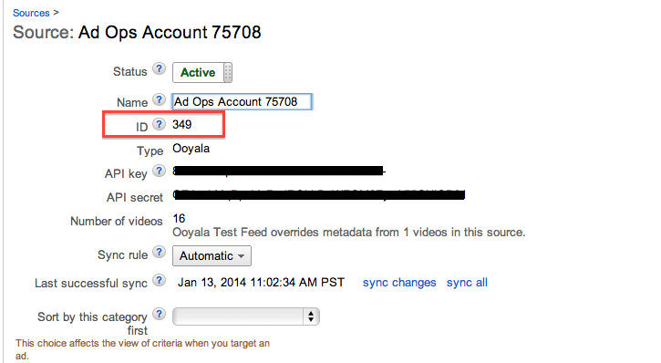

Overview
Google IMA ad sets can be associated with video assets. This documentation describes the Google IMA integration with Player V3.You have two options for associating Google IMA ads with the Ooyala player:
- Via Backlot ad sets. Create ad sets with the Backlot UI or API.
- Via player embedded parameters. Specify embedded parameters at the page level of the player.
Prerequisites
Option 1: Integrate Google IMA Ads with the Ooyala Player via Ad Sets
- Create a Google IMA ad set using the Backlot UI or Backlot API.
Backlot UI: For instructions on how to create an ad set using the Backlot UI, see Creating Ad Sets for Integrating with Ad Sources.
Backlot API: For instructions on how to create an ad set programmatically with the Backlot API, see Ad Sets.
Note: Choose the Google IMA V3 option for the ad source when creating this ad set.Ad Set Fields
The required fields for creating a Google IMA ad set are:- Ad Set name: Enter a name for the ad set.
- Ad Tag: Enter your Google IMA tag here. This is available from your DFP,
Adxchange or Adsense account. For example:
http://123fakeads.g.doubleclick.net/gampad/ads?sz=400x300&iu= %2F6062%2Fiab_vast_samples&ciu_szs=300x250%2C728x90&impl=s&gdfp_req= 1&env=vp&output=xml_vast2&unviewed_position_start=1&url=[referrer_url] &correlator=[timestamp]&cust_params=iab_vast_samples%3Dlinear
- Assign an ad set to an asset or multiple assets using the Backlot UI, Player API, or Backlot API.
Backlot UI: For instructions on how to assign your Google IMA ad set to a single asset, see Managing Monetization. For instructions on how to assign your Google IMA ad set to multiple assets, see Bulk Applying Settings.
Player API: With the Player API you can only associate an ad set with an asset on your web page. To associate an ad set with an asset on multiple players you must replicate the code for each player. To associate an ad set with an asset using the Player API, see Assigning Ad Sets Dynamically.
Backlot API: With the Backlot API you can associate an ad set with an asset more concretely. That is, when you associate an asset with an ad set using the Backlot API the asset and the ad set will be paired together on any player and page you play the asset on. To associate an asset with an ad set using the Backlot API, see Associate Ad Set with Asset.
Option 2: Integrate Google IMA Ads with the Ooyala Player via Embedded Parameters
Follow the steps below to integrate Google IMA ads with a player via player embedded parameters.- Use the Player V3 OO.Player.create function to create the player. See Assigning an Ad Set with OO.Player.create for instructions on how to use OO.Player.create.
- Pass Google IMA ad tags to the Ooyala player using the google-ima-ads-manager parameter and its child parameters, described below.
- (Optional) Assign additional parameters with the additionalAdTagParameters parameter, described below.
The following parameters can be used with Google IMA Ad Manager and the Ooyala Player. The last two columns of the table note if the parameter is supported for Flash and/or HTML5.
| Parameter | Description | Flash | HTML5 |
|---|---|---|---|
| google-ima-ads-manager | This is the parent parameter used to pass Google IMA ad server or network tags
to the Ooyala player. This key only has effect with the values described
below. Required: Yes |
X | X |
| additionalAdTagParameters | Add functionality to your ad handling such as adding demographic targeting for
ads. These parameters have a dependency on how the ad tag is set up in Backlot. You
can use any of the internal key/value pairs that google-ima supports. Note: Unlike
adTagUrl, the additionalAdTagParameters appended parameters do not override
anything in the URL from Backlot.
Valid Values: Refer to Google's documentation on creating a master video tag manually Required: No Parent: google-ima-ads-manager |
X | |
| adTagUrl | Your Google IMA ad tag. Note: The adTagUrl you input here will override
whatever Ad Tag value you have assigned to the video asset in Backlot.
Valid Values:Any string Required: Yes Parent: google-ima-ads-manager |
X | X |
| useStyledNonLinearAds | Show or hide a close button for non-linear ads. Valid Values: yes | true | no | false Default: true Required:No Parent: google-ima-ads-manager |
X | |
| showInAdControlBar |
Show or hide player controls bar during ad playback. Note: There is a general player parameter also called 'showInAdControlBar'.
You should not use both showInAdControlBar parameters simultaneously. The
preferred method is to use the general player showInAdControlBar parameter outside
of the 'google-ima-ads-manager' hash.
Valid Values: yes | true | no | false Default: no Required: No Parent: google-ima-ads-manager |
X | X |
| showAdMarquee | Show or hide ad marquee during ad playback. Valid Values: true | false Default: true Required: No Parent: google-ima-ads-manager |
X | X |
| playWhenAdClick | If set to yes, ad playback will continue even if an ad is clicked. For Flash,
if playWhenAdClick is set to false with no ad controls, after the user clicks on the
ad and is redirected, ad playback will continue when the user clicks on the ad the
second time. We are aware that this causes some undesired behavior where the ad url
opens for both ad pause and ad play events. We are working with the Google IMA team
to fix this behavior. Otherwise, ad playback will pause. Valid Values: yes | true | no | false Default: no Required: No Parent: google-ima-ads-manager |
X | X |
| adRequestTimeout | Set the time taken, in milliseconds, to make a timeout for the ad request and
continue the video playback. Valid Values: Any integer greater than or equal to 1000 Default: 3000 Required: No |
X | X |
Below is a code snippet showing how to use the google-ima-ads-manager parameter. You will replace "some url" with the actual Google IMA ad tag containing the response.
var videoPlayer =
OO.Player.create("playerwrapper", "embed_code", {
height: "100%",
width: "100%",
"google-ima-ads-manager": {
adTagUrl: "some url",
...
}
});
Below
is a more robust example of Google IMA V3 integration that will work for both Flash and
HTML5. The player_branding_id of a player and the embed code of an asset can be found in the
Embed tab on the MANAGE page of Backlot. To include the HTML5 pre-roll playback controls, a
"showInAdControlBar" : true flag needs to be set in the "google-ima-ads-manager" like the
following:
<html>
<head>
<script src='http://player-staging.ooyala.com/v3/player_branding_id'></script>
</head>
<body>
<div id='ooyalaplayer' style='width:640px;height:360px'></div>
<script>
OO.ready(function () {
OO.Player.create("ooyalaplayer", "embed_code", {
"google-ima-ads-manager": {
"adTagUrl": "yourAdTagUrl",
"showInAdControlBar": true
},
onCreate: function (player) {
...
}
});
});
</script>
</body>
</html>
"google-ima-ads-manager": {
"adTagUrl": "some url",
"additionalAdTagParameters": {
"vid": "embed code",
"cmsid": "349"
}
}
To learn how to use additionalAdTagParameters, see Google IMA Ads Embedded Parameters in Player V3 (Deprecated).Special Case: Google DFP Premium
This section only applies if you are using Google DFP.
Before trafficking ads, if you are using DFP Premium you must first map your video content and all related custom metadata to Google's platform. To learn how to do this, see Monetizing your Ooyala Content with DFP.
Custom Metadata
If your video content has been successfully ingested into DFP, all custom metadata
key/value pairs should be visible in DFP's Content tab. These values may be used to target
ads against particular types of content. The following screenshot, for example, is from an
individual video asset from Ooyala’s test DFP account. 
Mapping Custom Metadata to DFP Keys
You have the option of creating custom targeting keys on DFP Premium. These keys are then
mapped to the key/values ingested from Backlot. To create these keys, in DFP, go to , as shown below.  For more information, go to the DFP help article on custom targeting.
For more information, go to the DFP help article on custom targeting.
Ad Rules
Ad rules can define when ads are inserted, how long they should run for, what format of ads are run, and what to use as the ad source.
- Standard Ad Rules, which apply to a single stream of content.
- Session Ad Rules. which applies to a visitor’s entire visit to customer’s pages. They can be applied across multiple content streams and across multiple sites. Session ad rules can only be applied to pre-roll ads.
To enable ad rules for an ad:
- Specify your ad rules in DFP. For information on implementing DFP ad rules, go to https://support.google.com/dfp_premium/answer/2553686?hl=en.
- To enable your DFP ad rules to correctly render for your Google IMA V3 ad with the
Backlot UI, click , and set the ad position to "ad rules" for the desired ad. For more
information on Google IMA V3 ads in the Backlot UI, see Ad Set Fields for Google IMA V3.
OR
To enable your DFP ad rules to correctly render for your Google IMA V3 ad with the Backlot API, set "ad_type": "rules" for the desired ad. For more information see Ad Sets.Note: Settings applied at the page level with the ad tag url will override Backlot settings. However, the position type (ad rule or non ad rule) must match on the page level and in Backlot for ads and ad rules to properly render.
Ad Targeting
To enable targeting against content metadata values, Google DFP requires two values to be included on your IMA tag: cmsid and vid. Once these values are included when making ad requests, the IMA ad manager “knows” which video asset is making the request. As a result, it returns whatever ad response has been defined by the publisher’s ad operations team.
cmsid: A unique value assigned automatically by Google to each content source. To locate it within the DFP Premium platform, click on the Video tab (on the upper right), navigate to Sources and click on the source in question. The value is “ID,” as shown below: vid: A unique value for each video asset. The Ooyala-IMA integration uses Ooyala’s Content ID.
When creating the IMA Ad Manager adset, the publisher will need to append the IMA ad tag with the macro [oo_embedcode]. Here’s an example IMA Ad Manager tag with both cmsid and vid:
http://googleads.g.doubleclick.net/pagead/ads?client=ca-video-pub-9498212586027311&slotname=8286566767&cmsid=176&vid=[oo_embedcode]
"google-ima-ads-manager": {
adTagUrl: "some url",
"additionalAdTagParameters": {
"vid": "embed code",
"cmsid": "349"
}
}
Special Case: Google IMA V3 Companion Ads
- Include the following code in your webpage:
<script src="//www.googletagservices.com/tag/js/gpt.js"> </script>
- Create the companion tag.
- Call the right Google API to place the companion ad. For
example:
<div id='cad' style='width:300px;height:250px;background-color:red'></div> </br> <script type="text/javascript"> // Add a command to the command queue googletag.cmd.push(function () { // Define the unit var adSlot1 = googletag.defineSlot('/5129/News/QLD', // Ad Unit Name, obtained by the provider [300, 250], 'cad'); adSlot1.addService(googletag.companionAds()); googletag.enableServices(); // Immediately signal to show it. googletag.display('cad'); }); </script>
Special Case: Twitter Cards
To learn how to integrate with Twitter Player Cards, see Integration with Twitter Player Cards.